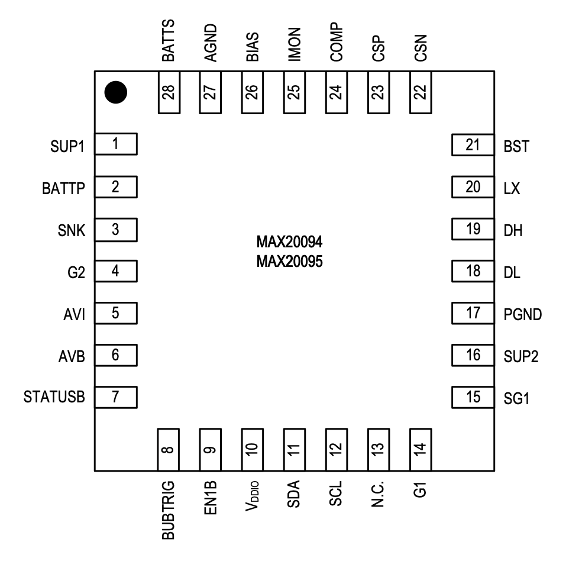

MAX20094 / MAX20095

Pin Description
| PIN | NAME | FUNCTION |
|---|---|---|
| 1 | SUP1 | Input to the CC/CV Charger. Connect a 2.2μF ceramic capacitor from SUP1 to the ground plane. |
| 2 | BATTP | Charger Output for the Backup Battery (BUB). BATTP is the current sink for the battery state-of- health (SOH) check. Place a 10μF, 2.2μF, and 0.1μF ceramic capacitor as close as possible to the SUP2 pin. See the PCB Layout Recommendations section for details on trace sizing to BATTP. |
| 3 | SNK | Connection for the Source of the External MOSFET (M4) for State-of-Health (SOH) Measurements. The SNK pin sinks the preset current from the BUB to the external MOSFET during SOH measurements. |
| 4 | G2 | Gate Drive to Turn on the MOSFET (M4) and Sink Current into the IC. This function is controlled by I2C. G2 is not connected when the discharger is disabled. When the discharger is enabled, G2 is driven to BATTP for 62μs (typ) before the circuit starts up. |
| 5 | AVI | Analog Voltage Measurement for SNK Current Set During SOH Measurement. There is a 30kΩ pull-down resistor when AVI is disabled. |
| 6 | AVB | Analog Battery Voltage-Measurement Output During SOH Measurements. There is a 60kΩ pull- down resistor connected 10μs before the AVB switch is turned off through I2C. |
| 7 | STATUSB | STATUSB (Battery Boost) Default Open-Drain Output. Driven to AGND during boost operation due to loss of primary power; otherwise, high impedance. |
| 8 | BUBTRIG | STATUSB (Battery Boost) Default Open-Drain Output. Driven to AGND during boost operation due to loss of primary power; otherwise, high impedance. |
| 9 | EN1B | Charger Disable. EN1B is connected to ground during normal operation. If pulled high, the charger is disabled, regardless of the I2C register setting. |
| 10 | VDDIO | I2C Logic Interface Supply Voltage, 2.5V to 5.5V. Connect to the I2C bus supply. |
| 11 | SDA | I2C Data Signal |
| 12 | SCL | I2C Clock Input |
| 13 | N.C. | Connect to GND in the Application |
| 14 | G1 | High-Side p-Channel MOSFET (M3) Driver. There is a 188kΩ resistor between G1 and SG1. |
| 15 | SG1 | Source of the External p-Channel MOSFET (M3). SG1 and G1 control the gate drive of external MOSFET M3. |
| 16 | SUP2 | System Supply Voltage Input. High-voltage-tolerant input to the LDO, which generates 5V supply for the IC. Connect a resistor and capacitor filter from the battery-filtered rail and SUP2 |
| 17 | PGND | Power Ground Pin. Connect directly to the PCB ground plane. |
| 18 | DL | Low-Side MOSFET Driver Output. Connect to the gate of the boost converter's low-side MOSFET. |
| 19 | DH | High-Side MOSFET Driver Output. Connect to the boost converter's high-side MOSFET. |
| 20 | LX | Switching Node of DC-DC Controller |
| 21 | BST | Boosted Supply Voltage for the High-Side Sync MOSFET Gate Drive |
| 22 | CSN | Current-Sense Resistor, Inductor-Side Sense Point. Connect CSN as close as possible to the current-sense resistor terminal. |
| 23 | CSP | Current-Sense Resistor Input Pin. Connect CSP as close as possible to the current-sense resistor for accurate current sensing. |
| 24 | COMP | Loop-Compensation Component Connection Pin. COMP is the output of the internal gm amplifier. Connect a resistor in series with a capacitor to the AGND pin. The component values are selected according to the data sheet recommendations. |
| 25 | IMON | Connect IMON to GND with a 500Ω Resistor. VIMON = (ICHG/440) x 500Ω. Max RIMON = (VBATTP(MIN) - 0.25)/(0.0025ICHG) - 200. |
| 26 | BIAS | Supply Pin for the Internal IC Circuits. This pin should be decoupled with a 2.2μF capacitor. BIAS is the output of the LDO connected to the VSUP_ pin, and is used to supply the internal circuitry with 5V. |
| 27 | AGND | Analog Ground. Low-noise ground for precision circuit blocks. |
| 28 | BATTS | Battery Voltage-Sensing Input. Senses the battery voltage for the voltage-feedback loop and routes to the internal analog switch. Connect BATTS as close as possible to the battery's positive terminal for the most accurate voltage sensing of the battery. |
| - | EP | Exposed Pad |